#1121: [VI] Clear Deaths (confirmed) timeseries
Issue number 1121
hmhoffman opened this issue on March 3, 2021, 8:27 AM PST
State: VI
Dates affected: 04/05/20 - 03/02/21
Describe the issue: As of April 5, 2020, we have been duplicating the Virgin Island's Deaths (confirmed + probable) into Deaths (confirmed), however our data quality team has determined that we do not have sufficient evidence that these deaths are confirmed to do so. On March 3, 2021, we cleared the Virgin Island's Deaths (confirmed) timeseries.
Comments
#1121: [VI] Clear Deaths (confirmed) timeseries
Issue number 1121
hmhoffman opened this issue on March 3, 2021, 8:27 AM PST
State: VI
Dates affected: 04/05/20 - 03/02/21
Describe the issue: As of April 5, 2020, we have been duplicating the Virgin Island's Deaths (confirmed + probable) into Deaths (confirmed), however our data quality team has determined that we do not have sufficient evidence that these deaths are confirmed to do so. On March 3, 2021, we cleared the Virgin Island's Deaths (confirmed) timeseries.
Comments
#1054: [VI]Move test time series to peoplewise column
Issue number 1054
muamichali opened this issue on January 8, 2021, 6:41 AM PST
Labels Data quality
State or US: Virgin Islands
Describe the problem The total test numbers from the Virigin Island have been saved in our Total Tests PCR column. A recent press release clarified that the number are in people units, so they should be moved to the correct field in our capture.
Link to data source https://doh.vi.gov/news/governor-bryan-addresses-spike-territory%E2%80%99s-covid-19-cases-securitization-senate-hearing-weekly
Comments
#1054: [VI]Move test time series to peoplewise column
Issue number 1054
muamichali opened this issue on January 8, 2021, 6:41 AM PST
Labels Data quality
State or US: Virgin Islands
Describe the problem The total test numbers from the Virigin Island have been saved in our Total Tests PCR column. A recent press release clarified that the number are in people units, so they should be moved to the correct field in our capture.
Link to data source https://doh.vi.gov/news/governor-bryan-addresses-spike-territory%E2%80%99s-covid-19-cases-securitization-senate-hearing-weekly
Comments
#1006: [CO] Deaths due to COVID vs. deaths among cases source switch
Issue number 1006
karaschechtman opened this issue on December 11, 2020, 10:34 AM PST
Labels Data quality
State or US: CO
Describe the problem Colorado's deaths due to COVID-19 metric is lagging its deaths among cases metric. On September 1, there was only 97 difference: 1946 deaths among cases, vs. 1849 deaths due to COVID. On December 11, there is a 759 difference—3759 deaths among cases, as opposed to 3005 deaths due to COVID. This means 20% of deaths among cases do not have death certificate data, vs. 5% in September, indicating a lag.
Link to data source https://covidtracking.com/data/state/colorado/screenshots CO's raw data files for confirmed/probable death breakdowns: https://www.arcgis.com/home/webmap/viewer.html?url=https://services3.arcgis.com/66aUo8zsujfVXRIT/ArcGIS/rest/services/colorado_covid19_daily_state_statistics_cumulative/FeatureServer&source=sd

Comments
We are adding the breakdown for confirmed/probable from 5/15 onward because before then they were not reported on the website and do not sum CO after.txt CO Before.txt
#988: [ND] Backfill Deaths (Confirmed and Probable), Deaths (Confirmed) to reflect all deaths rather than deaths due to COVID
Issue number 988
muamichali opened this issue on December 1, 2020, 11:19 AM PST
Labels Data quality
State or US: North Dakota
Describe the problem Over the past week, a gap has opened between the number of COVID-19 deaths North Dakota's health department reports and The COVID Tracking Project’s counts of deaths in the state. On November 30, North Dakota’s health department dashboard reported 927 cumulative COVID-19 deaths, but The COVID Tracking Project recorded 680. This is because we track deaths due to COVID, instead of deaths among cases in the state.
It’s clear that a reporting backlog is to blame for most of the widening discrepancy between figures: The share of COVID-19-positive individuals who died in North Dakota with death certificates still pending has doubled since the beginning of November. To better reflect the reality of rising deaths in North Dakota, we are changing our method for counting deaths in the state to the other main paradigm for tracking deaths: counting deaths among cases.
Link to data source https://covidtracking.com/data/state/north-dakota/screenshots
Comments
[ ND.xlsx ](url)
#887: [VI] Late update on 10/5
Issue number 887
the-daniel-lin opened this issue on October 6, 2020, 9:32 AM PDT
Labels Backfill Data quality Historical Data
State or US: Virgin Islands
Describe the problem On 10/5, VI updated after our daily update time.
Link to data source https://www.covid19usvi.com/
Comments
BEFORE: 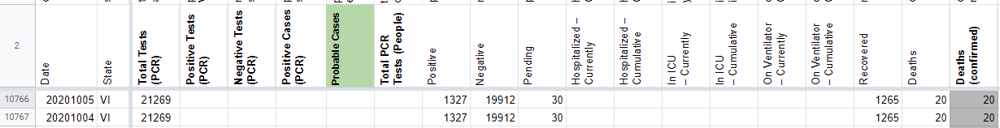
AFTER: 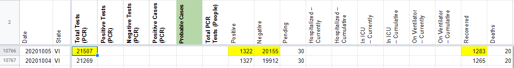
#777: [VI] SVP Fixes: Move Total Tests PCR (People) values to Total Tests (PCR) since reporting units are unknown
Issue number 777
muamichali opened this issue on August 19, 2020, 7:38 AM PDT
Labels Data quality stale
State or US: US Virgin Islands
Describe the problem
- [x] 1. Move
Total Tests PCR (People)values toTotal Tests (PCR)since reporting units are unknown - [x] 2. Update current capture in WS2 and source notes in States Matrix to reflect the change to
- [ ] 3. Consider Backfill time-series before 5/13 from pos+neg
Link to data source
Comments
BEFORE 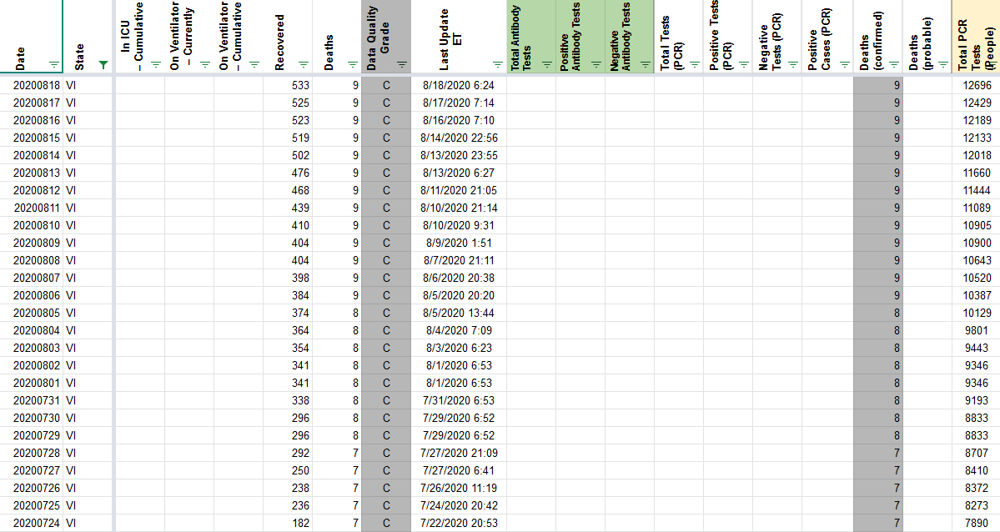
AFTER 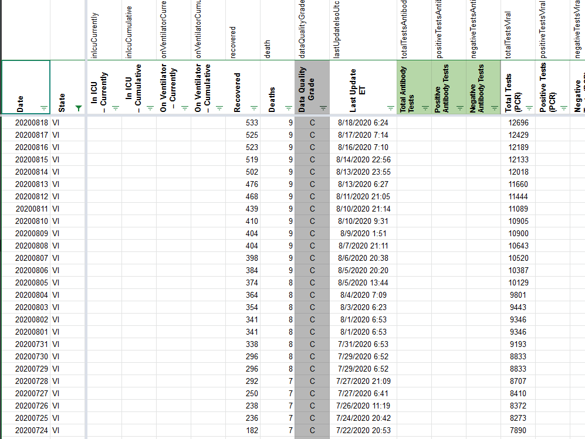
WS2 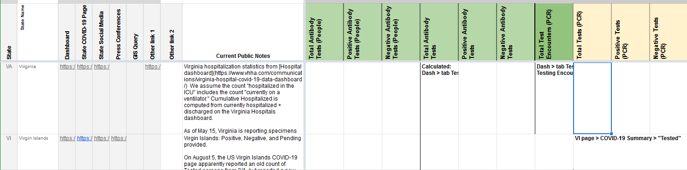
This issue has been automatically marked as stale because it has not had recent activity. It will be closed if no further activity occurs. Thank you for your contributions!
This issue has been closed because it was stale for 15 days, and there was no further activity on it for 10 days. You can feel free to re-open it if the issue is important, and label it as "not stale."
#683: [VI] PCL Historicals
Issue number 683
brianskli opened this issue on July 28, 2020, 6:45 AM PDT
Labels Historical Data PCL/SVP Historicals
State or US: US Virgin Islands
Describe the problem Unclear reporting taking place for "positives," but numbers are still being reported as confirmed PCR positives in addition to confirmed+probable positives.
Link to data source https://www.covid19usvi.com/
Comments
Action taken: Private note updated Before: 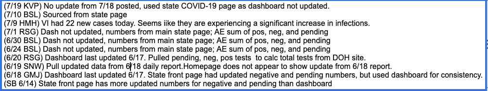 After: 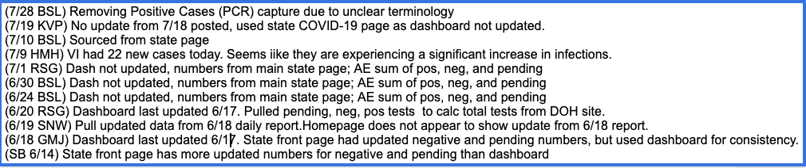
Values in Confirmed Cases (PCR) cleared Before: 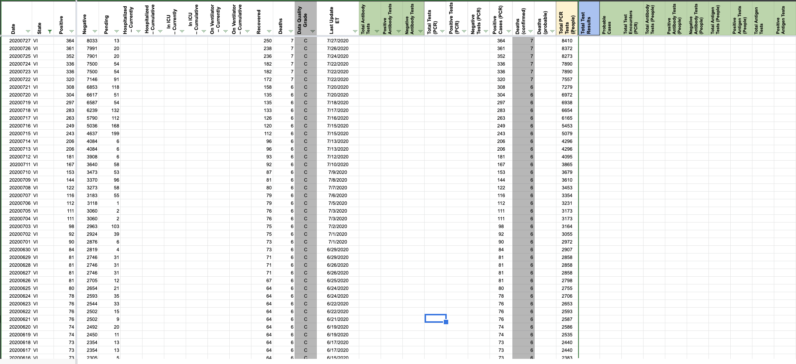 After: 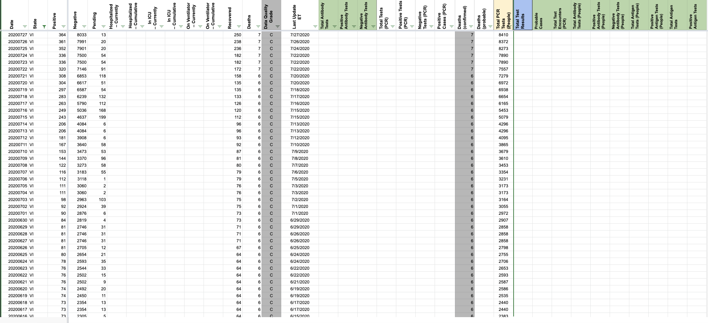
Pop-ups changed Before: 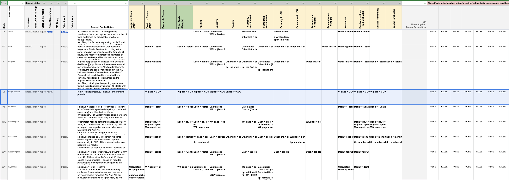 After: 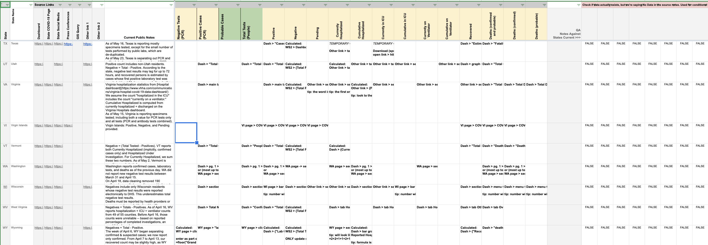
#572: [ID] Historicals Fill out historical info for current COVID-19 hospitalizations & ICU
Issue number 572
muamichali opened this issue on July 3, 2020, 7:36 AM PDT
Labels Data quality
State or US: Idaho
Describe the problem We did not capture these values before but they are available, so we should fill out the historical values
Link to data source https://public.tableau.com/profile/idaho.division.of.public.health#!/vizhome/DPHIdahoCOVID-19Dashboard_V2/Story1 Click Hospitalizations
Comments
Before: No values After 2020-07-03__CTP_ID_Update.xlsx
Hey @muamichali, I took a look at Idaho's Tableau dashboard and exported data from the Hospitalizations tab. Attached is a spreadsheet with a proposed update - please see "CTP_Update" tab: 2020-07-03__CTP_ID_Update.xlsx
Can you please review before we make an update for 2020-03-26 to 2020-06-28 for In ICU – Currently and Hospitalized – Currently?
Thanks! Camille
Link to Data Source(s):
- ICU: "Number of hospitalized and ICU with confirmed COVID-19" C_in_ICU_Full_Data_data.xlsx
- Hospitalizaitons: "Patients currently hospitalized in an inpatient bed who have suspected or confirmed COVID-19" S_and_C_Hospitalized_Full_Data_data.xlsx
Update - closing this ticket and moving to double-check.
#352: CDC Has Slashed COVID-19 Deaths by 40%
Issue number 352
JustOneGuyHere opened this issue on May 3, 2020, 5:29 PM PDT
Labels Data source
I suggest publishing both sets of numbers. I have used this site to track the numbers, but they need to be accurate.
https://www.cdc.gov/nchs/nvss/vsrr/covid19/index.htm
Comments
Hi @JustOneGuyHere
Please see the CDC Data tracker here https://www.cdc.gov/covid-data-tracker/index.html
Currently 65,735 deaths are reported on the page.
Thanks, censor.
On Sun, May 3, 2020 at 6:35 PM Michal Mart notifications@github.com wrote:
Closed #352 https://github.com/COVID19Tracking/issues/issues/352.
— You are receiving this because you were mentioned. Reply to this email directly, view it on GitHub https://github.com/COVID19Tracking/issues/issues/352#event-3298064864, or unsubscribe https://github.com/notifications/unsubscribe-auth/APOCEYR7QRRQTI7T4VA4XO3RPYLWJANCNFSM4MYLPALA .
#331: COVID19Tracking vs worldometers/info/coronavirus
Issue number 331
Fyjimojo opened this issue on April 29, 2020, 11:19 AM PDT
Labels NYC Probable Deaths
Hello. I have been tracking COVID-19 on worldometers.info/coronavirus since mid-March.
You report U.S. deaths at 52,525 as of yesterday.
Yesterday, worldometers.info/coronavirus reported 57,862.
Which number is correct?
Thank you!
Comments
Both numbers are defensible. The difference is primarily attributable to the way New York City and New York State differ in tracking deaths.
See: https://twitter.com/COVID19Tracking/status/1254161668671541248?s=20
We anticipate New York State will incorporate probable deaths soon, as will we, though maintaining our laboratory-confirmed number in the states where it is possible.
Alexis
On Wed, Apr 29, 2020 at 11:19 AM Fyjimojo notifications@github.com wrote:
Hello. I have been tracking COVID-19 on worldometers.info/coronavirus since mid-March.
You report U.S. deaths at 52,525 as of yesterday.
Yesterday, worldometers.info/coronavirus reported 57,862.
Which number is correct?
Thank you!
— You are receiving this because you are subscribed to this thread. Reply to this email directly, view it on GitHub https://github.com/COVID19Tracking/issues/issues/331, or unsubscribe https://github.com/notifications/unsubscribe-auth/ACS7NYKMDY22MCN7SKGJ76DRPBVUBANCNFSM4MT6SUNQ .
-- Alexis Madrigal Staff Writer | The Atlantic Co-Founder | The Atlantic's COVID Tracking Project, covidtracking.com m. 415 602 4953
This can't explain the entire difference for US total deaths, which as of this morning is approximately 6,000.
#311: Better data source for VI
Issue number 311
amandafrench opened this issue on April 27, 2020, 8:03 AM PDT
The most updated numbers for VI are on https://doh.vi.gov/covid19usvi Maybe this link should be the main / best data source.
Comments
Agree. Changed.
#295: Is it possible to have a time-series dataset for Tracking Race and Ethnicity in the COVID-19 Pandemic Blog Data?
Issue number 295
riccardograziani opened this issue on April 25, 2020, 9:19 AM PDT
Labels Feature Request
I would like to ask you if it is possible to obtain the following dataset as time-series dataset:
https://docs.google.com/spreadsheets/d/e/2PACX-1vTfUQPxkhP_CRcGmnnpUBihnTNZ9Z8pcizII4_sc2o2n3opOoAJdAM4CRTJBI339tou8LWnQrqbTMgH/pubhtml?gid=1129119811&single=true
Best, Riccardo
Comments
This issue has been automatically marked as stale because it has not had recent activity. It will be closed if no further activity occurs. Thank you for your contributions!
Thank you for the request @riccardograziani I will pass it on to the race data team.
I also wanted to let you know that we launched the new Covid Racial Data Tracker and homepage today https://covidtracking.com/race
Thanks very much for your response!
#253: Michigan COVID
Issue number 253
mlgnight opened this issue on April 22, 2020, 7:20 AM PDT
Labels stale
RE: https://covidtracking.com/data/state/wisconsin#historical
How can the new tests for March 30 be negative??
Comments
This issue has been automatically marked as stale because it has not had recent activity. It will be closed if no further activity occurs. Thank you for your contributions!
This issue has been closed because it was stale for 15 days, and there was no further activity on it for 10 days. You can feel free to re-open it if the issue is important, and label it as "not stale."
#238: Washington COVID
Issue number 238
mlgnight opened this issue on April 20, 2020, 3:48 PM PDT
https://covidtracking.com/data/state/washington#historical positives dropped from 4/19 to 4/20
Comments
Thanks for reporting this issue @mlgnight!
If you scroll down to the top of the page, we publish notes that explain these kinds of issues if we know about them. In this case, it was a data revision by the state (4/19/20) are lower than yesterday. Data cleaning that occurred late on 4/18 removed 190 confirmed cases that were discovered to be out of state residents.
I was just checking WA state data and comparing to yours. I'm sure they won't perfectly line up since the WA state data is probably cleaned/edited from time to time for various reasons (adding/subtracting cases due to data entry errors, or like this one where some individuals were from out of state). I just wanted to make sure that this is to be expected (e.g. once your data is finalized for a particular date, it isn't updated. It might be nice to have a separate tracking database that does automatically update as states update there data. I also checked against the usafact.org dataset, and found similar discrepancies form the official WA state count. Either way, thank you so much for your work!
@jstover79 You are very welcome. If you find data that we need to update and report it here as new issue with state sources, we will do our best to correct historical data.
#226: California COVID Data
Issue number 226
mlgnight opened this issue on April 19, 2020, 7:50 AM PDT
Labels stale
At https://covidtracking.com/data/state/california#historical it appears that the data around April 10-12 seems odd. Flat, then big jump?
Comments
@mlgnight Thank you for reporting. There was an earlier issue https://github.com/COVID19Tracking/issues/issues/217 and the data has been patched. It should be reflected on the site this afternoon around 5.30pm EST.
This doesn't really explain CA's weird ups and downs, but more significantly, the total tests numbers on their data page are clearly rounded. Every day's total ends in -00. Your counts don't match theirs all the time, but they do right now.
Of course you have to use what the states report, but it really would be good to get to the bottom of what's going on with CA's reporting.
This issue has been automatically marked as stale because it has not had recent activity. It will be closed if no further activity occurs. Thank you for your contributions!
This issue has been closed because it was stale for 15 days, and there was no further activity on it for 10 days. You can feel free to re-open it if the issue is important, and label it as "not stale."
#200: Standard GeoJSON format for the COVIDTracking API?
Issue number 200
ilkkarinne opened this issue on April 16, 2020, 9:02 AM PDT
Labels stale
Hi, a great initiative you have for consolidating US COVID-19 data. I'm the author of the CovidJSON initiative, a standards based GeoJSON data model for infection data. Our goal is to harmonize national and international data interchange of COVID-19 data as geospatial datasets, and to make it easier to collect, publish, analyze and visualize infection data across different data providers and uses.
Would you be interested in testing out the CovidJSON format as an output format for the COVIDTracking API, providing input for improving it, and, in case you like it, promoting it's use for the different COVID-19 stakeholders within US?
I have some live data samples from Finland at https://data.covidjson.org/ and some static examples at https://github.com/spatineo/covidjson/tree/master/examples
Comments
This issue has been automatically marked as stale because it has not had recent activity. It will be closed if no further activity occurs. Thank you for your contributions!
This issue has been closed because it was stale for 15 days, and there was no further activity on it for 10 days. You can feel free to re-open it if the issue is important, and label it as "not stale."
#191: JHU and statnews are using hospitalization data from COVID19Tracker
Issue number 191
catawbasam opened this issue on April 13, 2020, 6:48 AM PDT
Labels stale
Both are very influential sources -- I'd like to propose we focus more on improving hospitalization counts.
Statnews is using cumulative hospitalizations. JHU unfortunately appears to be mixing current and cumulative hospitalizations in their 'hospitalization rate' tab.
JHU dashboard: https://www.arcgis.com/apps/opsdashboard/index.html#/bda7594740fd40299423467b48e9ecf6 "the COVID Tracking Project (testing and hospitalizations)"
STAT Tracker:
https://www.statnews.com/2020/03/26/covid-19-tracker/
"The datasets are drawn from the Johns Hopkins University Center for Systems Science and Engineering, from the COVID Tracking Project, and from USAFacts. In some cases, data on hospitalizations were not available."
Comments
Note: Deleted earlier comment advocating focus on cumulative hospitalizations.
The weight of reporting by states is increasingly tilted toward currently hospitalized, so it might make more sense to fill that out. It is also more directly tied to capacity management.
This issue has been automatically marked as stale because it has not had recent activity. It will be closed if no further activity occurs. Thank you for your contributions!
This issue has been closed because it was stale for 15 days, and there was no further activity on it for 10 days. You can feel free to re-open it if the issue is important, and label it as "not stale."
#124: Michigan negative counts -- COVID19Tracking is behind latest state report
Issue number 124
catawbasam opened this issue on April 2, 2020, 2:22 PM PDT
If they are on weekly updates, we should note that. Otherwise they may not be tracking the tests. Worrisome for one of the top hot-spots.
Comments
Updated numbers are posted to https://www.michigan.gov/coronavirus/0,9753,7-406-98163_98173---,00.html
Cumulative Number of Specimens Tested for COVID-19 - Last Updated 4/2/2020 14:45
| Lab Type | Negative Tests | Positive Tests | Total Specimens Tested |
|---|---|---|---|
| Commercial | 2312 | 592 | 2909 |
| Hospital | 16930 | 5906 | 22450 |
| Public Health | 4303 | 1507 | 5818 |
| Grand Total | 23545 | 8005 | 31177 |
Notes
Notes: This is a new reporting system and additional laboratories will be included over time. Counts of specimens tested positive will not equal number of people with COVID-19. People may have more than one test or may have had their test from an out of state lab. Total samples tested includes test that were negative, positive, and inconclusive. Commercial labs only includes data from LabCorp. Public health labs include the Michigan Department of Health and Human Services Bureau of Laboratories. Counts represent the total specimens tested, not total patients tested. A patient can have more than one specimen tested, therefore the number of specimens tested may be more than the number of patients tested.
Michigan negative counts were not updated "Last updated: 4/02 11:00 ET"
Those counts are for specimens. I did update with even more accurate data. See issue #173
#109: Georgia (US) - links to data behind DPH COVID-19 Daily Status Report
Issue number 109
bbrewington opened this issue on March 12, 2020, 2:45 PM PDT
Labels stale
The one you probably want to post in the States-info.csv file is the "Daily updated status report". Providing others in case you need to track data down to county level.
Daily updated status report - https://dph.georgia.gov/georgia-department-public-health-covid-19-daily-status-report
Links to JSON data behind the above report Total cases: https://sendss.state.ga.us/sendss/!ncovstatus.ajax?ptarget=obsummary Breakdown by Sex: https://sendss.state.ga.us/sendss/!ncovstatus.ajax?ptarget=gender Breakdown by Age Bucket: https://sendss.state.ga.us/sendss/!ncovstatus.ajax?ptarget=age Cases by County - https://sendss.state.ga.us/sendss/!ncovstatus.ajax_ncovmap
Comments
This issue has been automatically marked as stale because it has not had recent activity. It will be closed if no further activity occurs. Thank you for your contributions!
This issue has been closed because it was stale for 15 days, and there was no further activity on it for 10 days. You can feel free to re-open it if the issue is important, and label it as "not stale."
Changes-2.txt